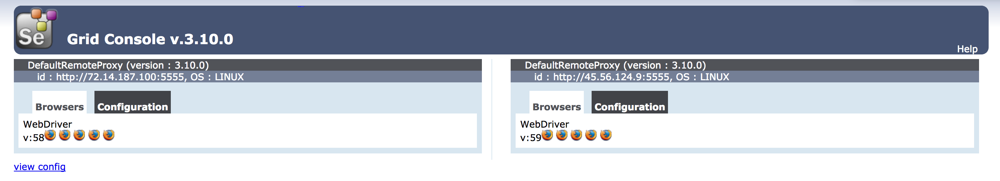

Use Selenium Grid for Cross-Browser Compatibility Testing
Updated by Linode Written by Jared Kobos
What is Selenium Grid?
Selenium is a browser automation library with bindings for most common programming languages. It is most often used for testing web applications, but can also be used to automate any task that a web browser can perform. In contrast to similar tools such as Nightmare.js, Selenium can run tasks or tests on any version of any major browser. This can make it more complicated to get running, but allows you to test your application’s behavior on exactly the platforms that users are likely to need.
For many applications, the Selenium standalone server is sufficient. However, Selenium can also be configured as a grid, with multiple nodes communicating with a central hub. The nodes and hub can be run on the same computer or server, or can be located on separate Linodes. Selenium Grid offers two main benefits:
Selenium runs on Java and is compatible with all major operating systems. This makes it possible to set up a grid consisting of servers (or virtual machines) running Linux, OSX, and Windows. A test suite can then be run against the grid, with each test run on multiple browsers and operating systems. The hub will delegate each test to a node that has the requested capability (e.g. sending a Safari test to a node with OSX and the Safari webdriver).
For larger projects, running a lengthy test suite in series can be time consuming. By running the test suite across a grid consisting of multiple servers, it is possible to distribute the tests across multiple nodes and significantly increase the performance of the testing process.
This guide shows how to set up a simple Selenium grid consisting of a hub and two nodes, all on separate Linodes. A simple test script will then be used to demonstrate running tests against different versions of Firefox.
Prepare Grid Linodes
Install Java and other dependencies on each Linode that will be part of the Selenium grid. This guide uses three Linodes for this purpose, but you can also run all of the nodes from the same Linode if you prefer. Throughout this guide, these Linodes will be referred to as hub, node-1, and node-2.
Install Java
The steps in this section will install the Java 8 JDK on Ubuntu 16.04. For other distributions, see the official docs.
Install
software-properties-commonto easily add new repositories:sudo apt-get install software-properties-commonAdd the Java PPA:
sudo add-apt-repository ppa:webupd8team/javaUpdate the source list:
sudo apt-get updateInstall the Java JDK 8:
sudo apt-get install oracle-java8-installer
Install Dependencies
When running tests with Selenium, each grid node can only run tests on browsers that have been installed on that node. Each browser also requires a separate executable webdriver. For this example, install Geckodriver and different versions of Firefox on node-1 and node-2.
Check the latest release of Geckodriver on the releases page and download it to
node-1andnode-2:wget https://github.com/mozilla/geckodriver/releases/download/v0.19.1/geckodriver-v0.19.1-linux64.tar.gzExtract the archive and move the executable to a location in your PATH:
tar -xvf geckodriver-v0.19.1-linux64.tar.gz sudo mv geckodriver /usr/local/bin/On
node-1, install the latest stable version of Firefox:sudo apt install firefoxOn
node-2, install the Firefox developer edition:sudo add-apt-repository ppa:ubuntu-mozilla-daily/firefox-aurora sudo apt update && sudo apt install firefoxCheck and record the version numbers to use when running tests:
node-1:
firefox --versionMozilla Firefox 58.0.2node-2:
firefox --versionMozilla Firefox 59.0
Download Selenium
Selenium provides a single .jar file that can be used to run a standalone server, hub, or node. Check the latest release at the Selenium downloads page and download the file to each Linode using wget:
wget http://selenium-release.storage.googleapis.com/3.10/selenium-server-standalone-3.10.0.jar
Start Grid Hub
On the
hubLinode, start the hub by running the Selenium server with-roleset tohub:java -jar selenium-server-standalone-3.10.0.jar -role hubThe resulting output will give you URLs to use for registering nodes and connecting to the hub. Copy these URLs for later use:
21:27:51.470 INFO [GridLauncherV3.launch] - Selenium build info: version: '3.10.0', revision: '176b4a9' 21:27:51.475 INFO [GridLauncherV3$2.launch] - Launching Selenium Grid hub on port 4444 2018-03-06 21:27:52.248:INFO::main: Logging initialized @1166ms to org.seleniumhq.jetty9.util.log.StdErrLog 21:27:52.446 INFO [Hub.start] - Selenium Grid hub is up and running 21:27:52.447 INFO [Hub.start] - Nodes should register to http://69.164.211.42:4444/grid/register/ 21:27:52.448 INFO [Hub.start] - Clients should connect to http://69.164.211.42:4444/wd/hub
Configure Grid Nodes
On
node-1andnode-2, create a node configuration fileconfig.jsonand add the following content. Replace thehubaddress with the public IP of thehubLinode, and replace theversionwith the version of Firefox installed on the respective nodes. If you are putting the grid and nodes on the same Linode, replace the IP address withhttp://localhost:4444:- config.json
-
1 2 3 4 5 6 7 8 9 10 11 12 13 14 15 16 17 18 19 20 21 22 23 24 25 26 27{ "capabilities": [ { "browserName": "firefox", "marionette": true, "maxInstances": 5, "seleniumProtocol": "WebDriver", "version": "58.0.2" } ], "proxy": "org.openqa.grid.selenium.proxy.DefaultRemoteProxy", "maxSession": 5, "port": 5555, "register": true, "registerCycle": 5000, "hub": "http://192.0.2.0:4444", "nodeStatusCheckTimeout": 5000, "nodePolling": 5000, "role": "node", "unregisterIfStillDownAfter": 60000, "downPollingLimit": 2, "debug": false, "servlets" : [], "withoutServlets": [], "custom": {} }
Connect each node to the hub:
java -jar selenium-server-standalone-3.10.0.jar -role node -nodeConfig config.jsonYou should see output similar to the following, indicating that your nodes have been successfully registered to the hub:
21:33:22.856 INFO - Selenium Server is up and running on port 5555 21:33:22.857 INFO - Selenium Grid node is up and ready to register to the hub 21:33:22.895 INFO - Starting auto registration thread. Will try to register every 5000 ms. 21:33:22.896 INFO - Registering the node to the hub: http://69.164.211.42:4444/grid/register 21:33:23.064 INFO - Updating the node configuration from the hub 21:33:23.178 INFO - The node is registered to the hub and ready to use
You can also check the output from the hub itself:
21:27:53.849 INFO [DefaultGridRegistry.add] - Registered a node http://198.58.122.154:5555
21:27:56.445 WARN [BaseRemoteProxy.] - Max instance not specified. Using default = 1 instance
21:27:56.450 INFO [DefaultGridRegistry.add] - Registered a node http://50.116.22.93:5555
21:27:56.743 WARN [BaseRemoteProxy.] - Max instance not specified. Using default = 1 instance
Navigate to
http://192.0.2.0:4444/grid/consolein a web browser (replace192.0.2.0with the public IP address of yourhubLinode) to see a console listing your available nodes.
The console should show that each node is configured to use a different version of Firefox.
Prepare Local Test Environment
In this example, the test script will be run from your local development machine. It will connect to the remote grid and execute the tests from there. If you do not have an available development machine, use a separate Linode.
Install Node.js and NPM
This guide uses the NPM selenium-webdriver package, which contains Node.js bindings for Selenium.
Use
curlto download the setup script provided by NodeSource. Replace the Node version in thecurlcommand with the version you would like to install:curl -sL https://deb.nodesource.com/setup_9.x -o nodesource_setup.shRun the script:
sudo bash nodesource_setup.shThe setup script will run an
apt-get updateautomatically, so you can install Node.js right away:sudo apt install nodejs npm
The Node Package Manager (NPM) will be installed alongside Node.js.
Create an Example Test Script
This script tests the Linode Docs home page.
Create a directory for the test suite:
mkdir test-selenium && cd test-seleniumInitialize a Node.js app within the directory:
npm initAccept the default values when prompted.
Install NPM packages:
npm install --save selenium-webdriverCreate
test.jsand add the following script. Replace192.0.2.0on Line 11 with the IP address ofhub:- ~/test-selenium/test.js
-
1 2 3 4 5 6 7 8 9 10 11 12 13 14 15 16 17 18 19 20 21 22 23 24 25 26 27 28 29 30 31 32 33 34 35 36 37 38 39 40 41 42const {Builder, By, Capabilities, Key, until} = require('selenium-webdriver'); let firefox = require('selenium-webdriver/firefox'); const VERSIONS = ['58.0.2','59.0']; function buildDrivers(versions) { let drivers = []; for (let version of versions) { driver = new Builder().forBrowser('firefox') .withCapabilities(Capabilities.firefox().setBrowserVersion(version)) .usingServer('http://192.0.2.0:4444/wd/hub') .setFirefoxOptions( new firefox.Options().headless()) .build(); drivers.push(driver); } console.log('built drivers for ' + versions); return drivers; } async function example(driver) { try { await driver.get('http://www.linode.com/docs'); await driver.findElement(By.name('q')).sendKeys('nginx', Key.RETURN); let el = driver.findElement(By.linkText('How to Configure nginx')); await driver.wait(until.elementIsVisible(el), 1000); await el.click(); title = await driver.getTitle(); } finally { await driver.quit(); } }; async function main() { const drivers = await buildDrivers(VERSIONS); for (let driver of drivers) { example(driver); }; } main();
Save the test script, then run it:
node test.jsIf successful, the script will search for NGINX in the Linode docs library, visit one of the results pages, and check that the page title matches the link text. It will print out the page title as well:
built drivers for 58.0.2,59.0 How to Configure nginx How to Configure nginxThe driver requested two versions of Firefox to run on the two nodes.
test.jsruns the driver asynchronously across two nodes in order to run thegetTitlemethod across two browser versions.
By creating different drivers for each combination of platform, browser, and version you want to test, you can specify which node or nodes should be used to run each test. If more than one node has the requested capabilities, Selenium will choose one of the nodes at random. In this way it is possible to run a large, cross-browser test suite in much less time than it would take to run the tests one at a time.
More Information
You may wish to consult the following resources for additional information on this topic. While these are provided in the hope that they will be useful, please note that we cannot vouch for the accuracy or timeliness of externally hosted materials.
Join our Community
Find answers, ask questions, and help others.
This guide is published under a CC BY-ND 4.0 license.